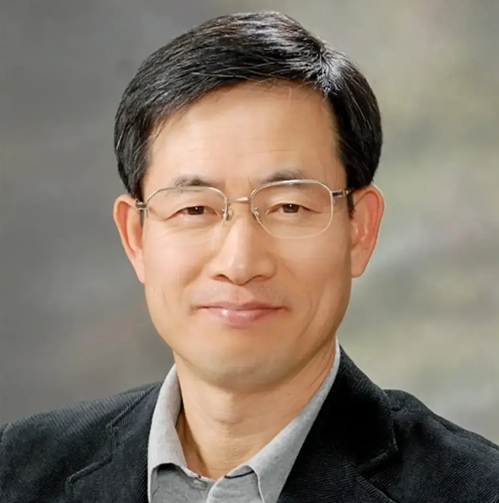

정원 교수 (Won Jung)
대구대학교 산업공학 명예교수 · Professor Emeritus of Industrial Engineering, Daegu University
소개
정원(Won Jung)은 대한민국의 대학교수이자 산업공학자로, 대구대학교 산업공학 명예교수이다. 대구대학교 공과대학장(2012~2014)과 한국신뢰성학회 제6대 회장(2011~2012)을 지냈다. 신뢰성공학과 제품안전 분야에서 오랫동안 교육과 연구를 해 왔으며, 현재는 신뢰성공학을 바탕으로 기업용 AI 시스템의 신뢰성과 운영 거버넌스를 연구하고 있다.
학력과 초기 경력
경북고등학교와 한양대학교 산업공학과(1982년 학사)를 졸업했다. 미국 웨인주립대학교(Wayne State University)에서 산업공학 석사(1986)와 박사(1990) 학위를 받았다. 박사 학위 취득 후 1990년부터 1992년까지 미국 트렌턴주립대학(Trenton State College, 현 The College of New Jersey) 교수로 재직했다.
대구대학교 재직
1992년 대구대학교 산업경영공학과 교수로 부임해 2020년 2월 정년퇴임할 때까지 신뢰성공학, 제품안전설계, 제조물책임 분야를 가르치고 연구했다. 1999년부터 2000년까지는 미국 워싱턴대학교(University of Washington) 산업공학과 방문학자로 연구했다. 2012년부터 2014년까지 대구대학교 공과대학장을 맡았다. 정년퇴임 이후 대구대학교 명예교수로 있다.
학회 및 산업계 활동
2011년부터 2012년까지 한국신뢰성학회 제6대 회장을 지냈으며, 2014년 한국신뢰성학회 신뢰성 학술상을 받았다. 삼성전자, 현대자동차, LG전자 등 국내 주요 기업을 대상으로 신뢰성공학과 제품안전 분야의 기술 자문과 교육을 했고, 정부가 지원하는 여러 산업기술 연구개발 과제에 참여했다. 산학연 기술개발에 기여한 공로로 2008년과 2012년 두 차례 지식경제부 장관 표창을 받았고, 2020년 교육 발전에 이바지한 공로로 근정포장을 받았다.
연구
주요 연구 분야는 신뢰성공학, 정량적 안전평가, 신뢰성 보증, 무기체계의 RAM(신뢰도·가용도·정비도) 분석, 예방정비이다. 대부분의 논문은 한국신뢰성학회의 《신뢰성응용연구》에 발표되었으며, 학술 데이터베이스 DBpia에 47편의 논문이 수록되어 있다. 2010년대 후반에는 빅데이터와 머신러닝을 무기체계의 고장률과 정비도 예측에 적용하는 연구를 했다.
정년퇴임 이후에는 기업용 AI 시스템의 종합적 신뢰성(Dependability)과 실행 시점 거버넌스(Runtime Governance)에 관한 기술 저술을 하고 있다. 개별 AI의 작업 능력과 기업 AI 시스템 전체의 신뢰성을 구분하고, AI 운영 통제 구조로 '4대 실행 시점 거버넌스 기둥(Four Runtime Governance Pillars)'을 제안했다. 이러한 글은 기술 정보 웹사이트 AI Insights Worldwide에 발표하고 있다.
경력
| 2020.03 ~ | 대구대학교 명예교수 |
| 2012 ~ 2014 | 대구대학교 공과대학장 |
| 2011 ~ 2012 | 한국신뢰성학회 제6대 회장 |
| 1999 ~ 2000 | 미국 워싱턴대학교 방문학자 |
| 1992 ~ 2020 | 대구대학교 산업경영공학과 교수 |
| 1990 ~ 1992 | 미국 트렌턴주립대학(현 The College of New Jersey) 교수 |
학력
| 1990 | 미국 웨인주립대학교 산업공학 박사 |
| 1986 | 미국 웨인주립대학교 산업공학 석사 |
| 1982 | 한양대학교 산업공학과 학사 |
| 1973 | 경북고등학교 졸업 |
수상
| 2020 | 대한민국 근정포장 |
| 2014 | 한국신뢰성학회 신뢰성 학술상 |
| 2012 | 지식경제부 장관 표창 |
| 2008 | 지식경제부 장관 표창 |
저서
- 《신뢰성공학》(김준홍 공저), 교문사, 2017
- 《확률과 통계》(공저), 교문사(청문각), 2009
- 《제조물책임과 제품안전》(공저), 교우사, 2004
주요 논문
- 정원 (2009). 「위험관리시스템 구축을 위한 정량적 안전평가 절차」. 《신뢰성응용연구》 9(3), 165–176.
- Ismail, A., 정원 (2013). 「자동차 고장예지시스템의 기술동향 연구」. 《산업경영시스템학회지》 36(1), 78–85.
- 김인석, 정원 (2017). 「RAM 분석 정확도 향상을 위한 야전운용 데이터의 이상값과 결측값 처리 방안」. 《신뢰성응용연구》 17(3), 264–271.
- 탁정호, 정원 (2018). 「빅데이터를 활용한 레이더 시스템의 SRU 단위 고장률 예측방안」. 《신뢰성응용연구》 18(4), 339–348.
- 김인석, 탁정호, 정원 (2018). 「머신러닝 기법을 활용한 무기체계의 정비도 예측 방안」. 한국신뢰성학회 2018 추계학술대회.
링크
- 기술 블로그: AI Insights Worldwide
- LinkedIn: Won Jung 프로필
- 학술논문 목록: DBpia 정원 (대구대학교)
- ResearchGate: Won Jung 연구 실적
About
Won Jung (Korean: 정원) is a South Korean professor and industrial engineer. He is Professor Emeritus of Industrial Engineering at Daegu University, where he served as Dean of the College of Engineering (2012–2014). He was the sixth President of the Korean Reliability Society (2011–2012). His career has centered on reliability engineering and product safety, and his current work applies reliability engineering to the dependability and runtime governance of enterprise AI systems.
Education and early career
Jung graduated from Kyeongbuk High School and received a B.S. in Industrial Engineering from Hanyang University in 1982. He earned an M.S. (1986) and a Ph.D. (1990) in Industrial Engineering from Wayne State University in the United States. From 1990 to 1992 he was a professor at Trenton State College, now The College of New Jersey.
Daegu University
In 1992 Jung joined the Department of Industrial and Management Engineering at Daegu University, where he taught and researched reliability engineering, product safety design and product liability until his retirement in February 2020. He was a visiting scholar in industrial engineering at the University of Washington from 1999 to 2000. From 2012 to 2014 he served as Dean of the College of Engineering. He has been Professor Emeritus since his retirement.
Professional service and industry work
Jung served as the sixth President of the Korean Reliability Society from 2011 to 2012 and received the society's Reliability Academic Award in 2014. He provided technical consulting and training in reliability engineering and product safety to major Korean companies, including Samsung Electronics, Hyundai Motor Company and LG Electronics, and took part in government-funded industrial research projects. He received the Commendation of the Minister of Knowledge Economy in 2008 and 2012 for contributions to industry–academia technology development, and the Service Merit Medal (근정포장) of the Republic of Korea in 2020 for his contributions to education.
Research
His research covers reliability engineering, quantitative safety assessment, reliability assurance, RAM (reliability, availability and maintainability) analysis of weapon systems, and preventive maintenance. Most of his papers appeared in the Korean Reliability Society's Journal of Applied Reliability, and 47 of his papers are indexed in the DBpia academic database. In the late 2010s he applied big data and machine learning to failure-rate and maintainability prediction for weapon systems.
Since retiring, Jung has written on the dependability and runtime governance of enterprise AI systems. His writing distinguishes the task performance of individual AI models from the dependability of an organization's AI system as a whole, and proposes an operational control structure he calls the Four Runtime Governance Pillars. These articles are published on his technology website, AI Insights Worldwide.
Career
| 2020–present | Professor Emeritus, Daegu University |
| 2012–2014 | Dean, College of Engineering, Daegu University |
| 2011–2012 | 6th President, Korean Reliability Society |
| 1999–2000 | Visiting Scholar, University of Washington |
| 1992–2020 | Professor, Dept. of Industrial and Management Engineering, Daegu University |
| 1990–1992 | Professor, Trenton State College (now The College of New Jersey) |
Education
| 1990 | Ph.D. in Industrial Engineering, Wayne State University |
| 1986 | M.S. in Industrial Engineering, Wayne State University |
| 1982 | B.S. in Industrial Engineering, Hanyang University |
Honors
| 2020 | Service Merit Medal (근정포장), Republic of Korea |
| 2014 | Reliability Academic Award, Korean Reliability Society |
| 2012 | Commendation of the Minister of Knowledge Economy |
| 2008 | Commendation of the Minister of Knowledge Economy |
Books
- Reliability Engineering (신뢰성공학), with Kim Jun-hong, Gyomoon, 2017
- Probability and Statistics (확률과 통계), co-author, Gyomoon (Cheongmungak), 2009
- Product Liability and Product Safety (제조물책임과 제품안전), co-author, Gyowoosa, 2004
Links
- Blog: AI Insights Worldwide
- LinkedIn: Won Jung
- DBpia: Won Jung - publications
- ResearchGate: Won Jung